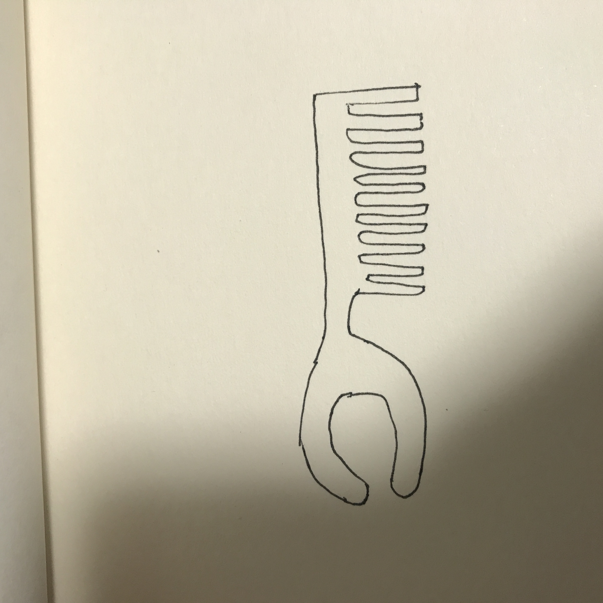

- 1. コーム付きヘアセットピンセット
- 2. 構想段階のスケッチ画像 
- 3. 実際に作った作品の画像
- 4. 設計ファイル
- 5. 作品の説明
- 髪の毛のセットで使うピンセットを作りました。左側のピンセット部分ではヘアセットが崩れた際にワックスで手を汚さずに整えることを目的に使用します。右側のコーム部分ではそのままコームとして使うことを目的としています。
- 6. なぜこの作品を作ろうという想いに至ったか
- 自分自身中学生時代からヘアセットをしていたが、ヘアセットが終わって手を洗った後にも微調整したいと思ったことが何度もあった。その際にワックスが再び手に付いてしまうことがあった。今回、ピンセットを作るのにあたって、手が汚れないようにヘアセット目的のピンセットを作ろうと考えた。また、ヘアセットで使うコームも付属させたら便利なのではないと思った。